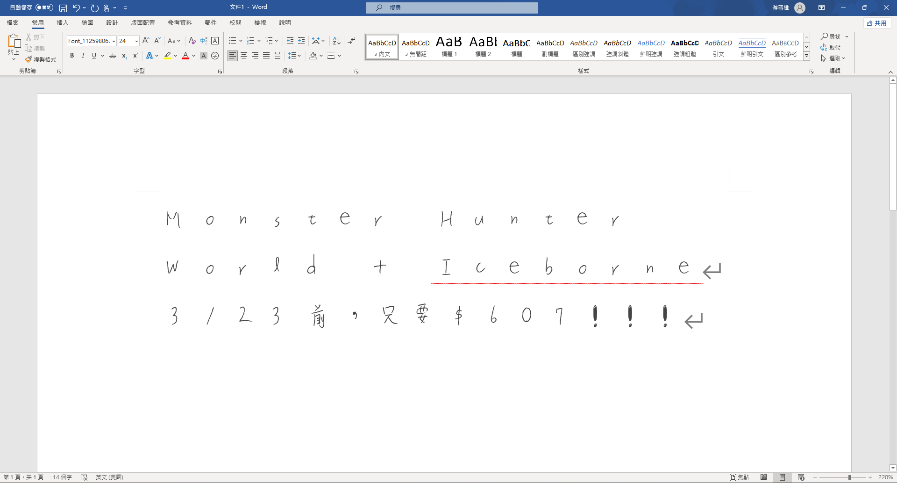

作業 04
電腦字體放置位置
電腦字體，請放在 https://github.com/
你的帳號
/ct2024s/hw04/src/
字體名稱.ttf
。
Download ttf檔案
Download Woff2檔案
心得(約100字)
這次的作業讓我學到如何將圖片檔案轉換成字體專用的檔案格式，我發現在寫字的時候使用較粗的筆，然後字寫大一點的話，字體的效果會比較好。
而且透過這次作業，我發現前一次的HW03 s2_crop.py有瑕疵，在處理圖片切割的地方的處理方式不好，容易漏字，但是好在有浩大神的幫助，所有問題都迎刃而解！
項目成績確認表
總分
完成後打勾
配分
等級
分項描述
10
1
Simple baseline
下載專案
1
下載Node.js
1
安裝專案
1
安裝Node.js
1
Medium baseline
PNG轉換成SVG
2
SVG轉換成SVG去除黑塊
1
SVG轉換成TTF、Woff2
1
Strong baseline
字體安裝
1
WORD實際應用
成果顯示
顯示用WORD使用電腦字體打字的畫面
